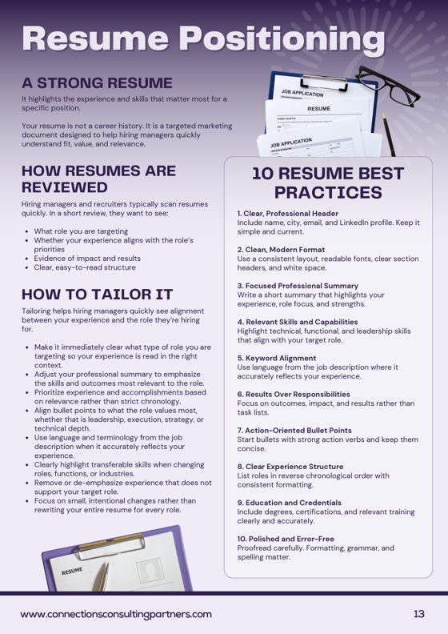
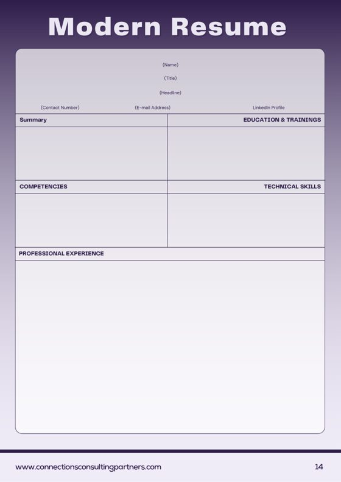
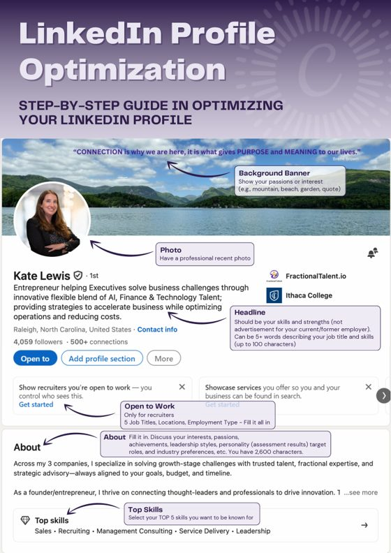

STEP 1 · OPEN TO ANYONE
Fix your resume and LinkedIn profile in two hours
A two-hour working session on your own files. You leave with the top of your resume rewritten and your LinkedIn profile updated for the role you want next.
STEP 1 · OPEN TO ANYONE
A two-hour working session on your own files. You leave with the top of your resume rewritten and your LinkedIn profile updated for the role you want next.
Most resumes and profiles describe a career. A recruiter is checking for a match to one role, and when that match isn't obvious, the application stops there.
In Fundamentals you work on your own resume and LinkedIn profile, not a sample. Kate teaches each section, you rewrite yours on the spot, and she checks the work before you leave.
Two hours, resume first, then LinkedIn
Everything you rewrite is aimed at it.
Headline, About, Experience and Featured. A quick recap of Skills, Location and Open to Work for anyone who missed the LinkedIn webinar.



Your copy of the Leaders in Transition workbook pages for resume and LinkedIn, plus Kate's handouts.
Send your resume and LinkedIn URL two business days before the session.
On the day, have both open and ready to edit.
Kate is the Founder of Connections Consulting Partners, a Raleigh recruiting firm that places technical, sales and leadership talent. She also hosts Leaders in Transition, a community for executives in a job search.
Kate teaches every workshop herself. She holds a LinkedIn Recruiter seat and fills real roles with it, so the advice comes from the side of the desk that does the hiring.
YOUR NEXT STEP
Run your search like a sales pipeline, from first contact to offer
Opens once you've completed Fundamentals. Next date: Tue 20 Oct.
No. Everything in the session works on a free account.
Fundamentals opens LIT Advanced, the second step. It runs the following Tuesday.
No. Kate teaches each section, then you work on your own resume and profile in the session.
Yes. Everyone who books gets the recording afterward.
Live on Zoom. You'll get the link before the session.
We'll move your seat to next month's date. Refunds are available up to 24 hours before the workshop, as long as the workbook hasn't been sent.
Each workshop needs three people to run. If a date has fewer, it moves to the next month and your seat moves with it.